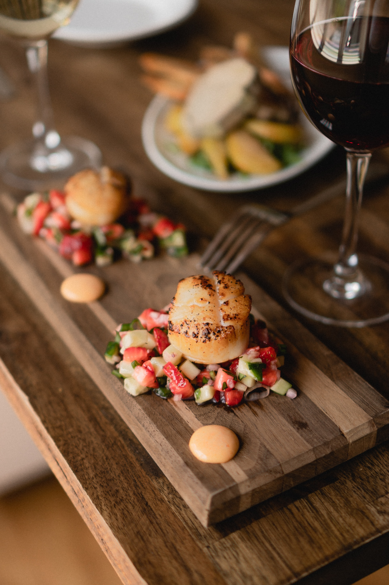

Uso del vino

1Tipos de usos
El vino tiene una amplia gama de usos, que van más allá de ser simplemente una bebida alcohólica. Aquí tienes algunos de los usos más comunes y variados del vino:
-
- Consumo directo:
- El uso más obvio del vino es como una bebida para disfrutar. Las personas lo consumen en comidas, eventos sociales y ocasiones especiales. El vino es apreciado por su sabor, aroma y la riqueza de las experiencias que puede ofrecer.
-
- Gastronomía:
- El vino es un componente esencial de la gastronomía en muchas culturas. Se utiliza para maridar con alimentos y realzar los sabores. Vinos tintos, blancos y rosados se combinan con diferentes platos para complementar sus perfiles de sabor.
-
- Cocina:
- El vino se utiliza en la cocina para agregar sabor a los platos. Se emplea en salsas, guisos, marinados y otros preparativos culinarios. El vino también se usa para flambeado y reducción, lo que puede intensificar los sabores.
-
- Religión y rituales:
- En muchas culturas, el vino tiene un significado religioso o es utilizado en rituales. En la tradición cristiana, el vino es un elemento central en la Eucaristía. También ha sido parte de rituales en otras religiones y culturas a lo largo de la historia.
-
- Salud (con moderación):
- Algunos estudios han sugerido que el consumo moderado de vino tinto puede tener beneficios para la salud, especialmente debido a sus antioxidantes, como el resveratrol. Se ha asociado con potenciales efectos positivos en la salud cardiovascular.
-
- Industria y economía:
- La producción y venta de vino constituyen una importante industria en muchas regiones. Los viñedos, bodegas, distribuidores y comerciantes dependen de la producción y venta de vinos para su sustento económico.
-
- Arte y cultura:
- El vino ha sido una fuente de inspiración para artistas y escritores a lo largo de la historia. Las referencias al vino en la literatura, la música, la pintura y otras formas de arte son comunes.
-
- Turismo:
- Los viñedos y bodegas a menudo atraen a turistas que desean experimentar la producción de vino, aprender sobre el proceso y degustar vinos locales. Esto ha llevado al crecimiento del enoturismo.
- Es importante recordar que el consumo de vino debe ser responsable y moderado, y que algunas personas deben abstenerse del consumo de alcohol por razones de salud o creencias personales.